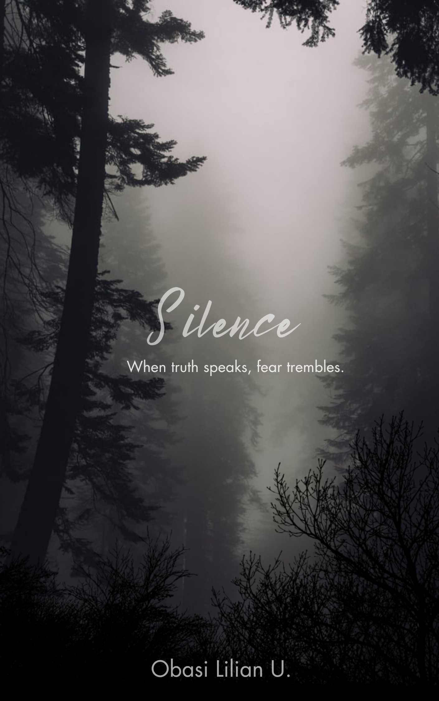

About me
Hi, I'm Obasi Lilian U, a creative writer with a strong passion for storytelling and fiction writing.
Find out more about me here.
Hi, I'm Obasi Lilian U, a creative writer with a strong passion for storytelling and fiction writing.
Find out more about me here.
My writing style is centered on:
Below are selected samples of my creative writing, mainly published fiction.

Author: Obasi Lilian U
Genre: Mystery-Thriller.
Read here Pulse

Author: Obasi Lilian U
Genre: Political-Drama Thriller
Read here Inks & Ashes

Author: Obasi Lilian U
Grnre: Crime Thriller
Read here Fracture Oath

Author: Obasi Lilian U
Genre: Romantic-Suspense
Read here The Heart Remembers

Author: Obasi Lilian U
Genre: Psychological Drama
Read here Lines Without Endings

Author: Obasi Lilian U.
Genre: Mystery
Read here Silence

Author: Obasi Lilian U.
Genre: Thriller
Read here Tell or Die